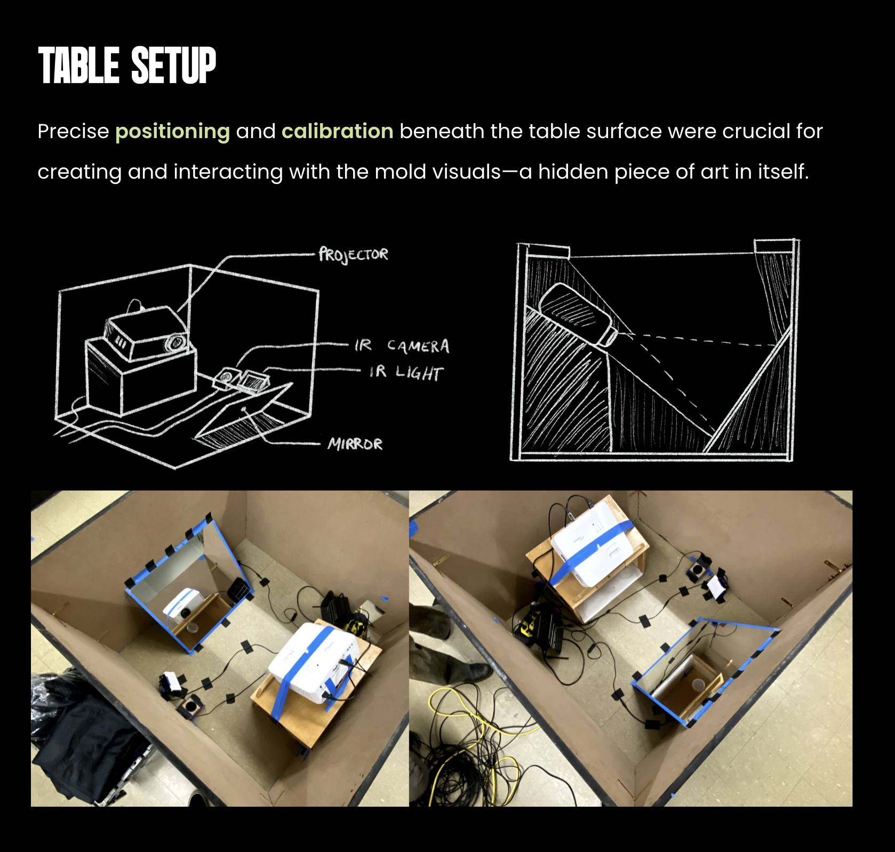
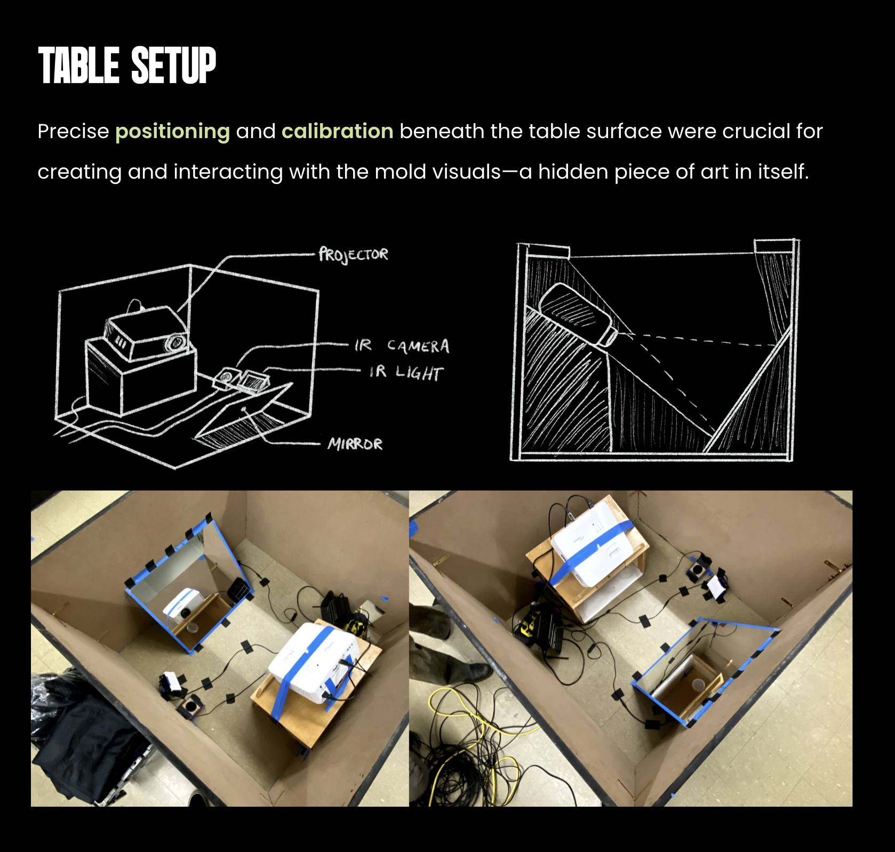

MOLD.
Visual Design • Physical Production
An interactive exhibit where mold comes to life
Overview
MOLD is an interactive petri dish where visitors use physical objects to grow their own mold.
Timeline - 14 weeks
Tools - TouchDesigner, Infared Camera, Projector
Team
Designers
- Natalie D. - Project Manager, Web Designer
- Adelia M. - Physical Production, Social Media
- Chase G. - Visual Designer
- Paula M. - Visual Designer
- Melanie B. - Visual Designer
- Ev A. - Marketing, Physical Production
- Jazz Z. - Content Designer, Sound Designer
Developers
- Max L. - Shape Detection, Physical Production
- Jacob G. - Shape Detection
- Shawn F. - Shape Detection


My Role
I was one of three designers responsible for creating the generative mold visuals in TouchDesigner. I also assisted with the physical production of the interactive table.
I often contributed to discussions about the overall concept and visual direction of the project throughout the creation process.
 
